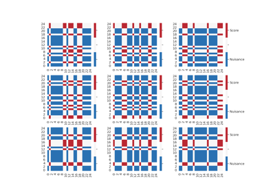

DoubleML
DoubleML
Install
Getting started
User guide
Examples
Python API
R API
Release notes
Multiway Cluster Robust DML
DML: Bonus Data
Examples
¶

Multiway Cluster Robust DML
¶
DML: Bonus Data
¶
Gallery generated by Sphinx-Gallery
8.
Sample-splitting, cross-fitting and repeated cross-fitting
Multiway Cluster Robust DML